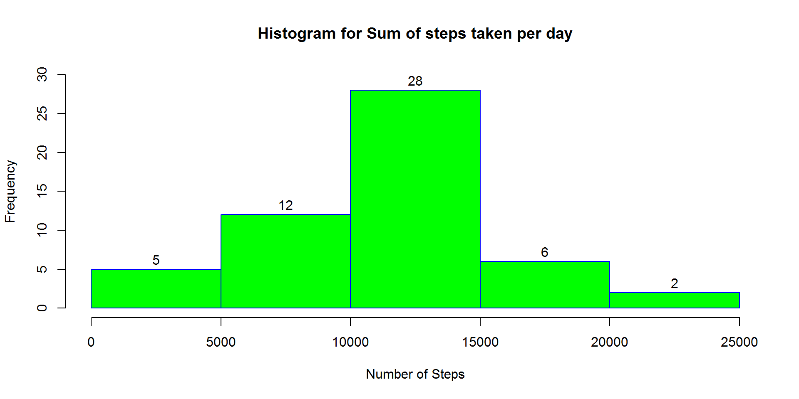
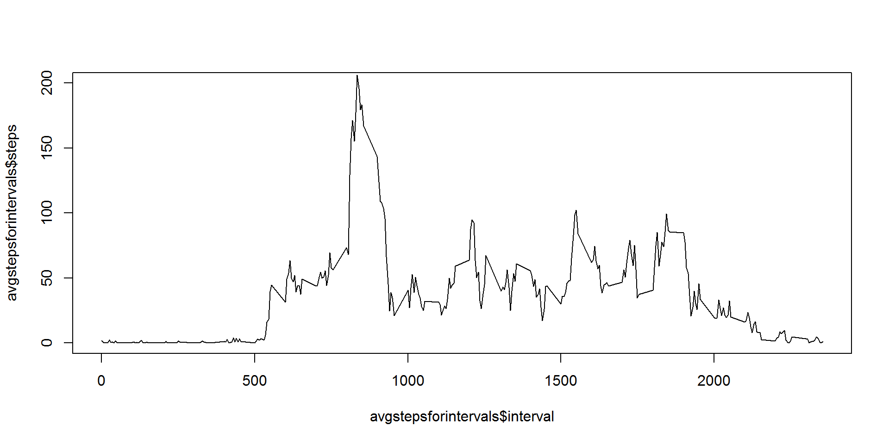
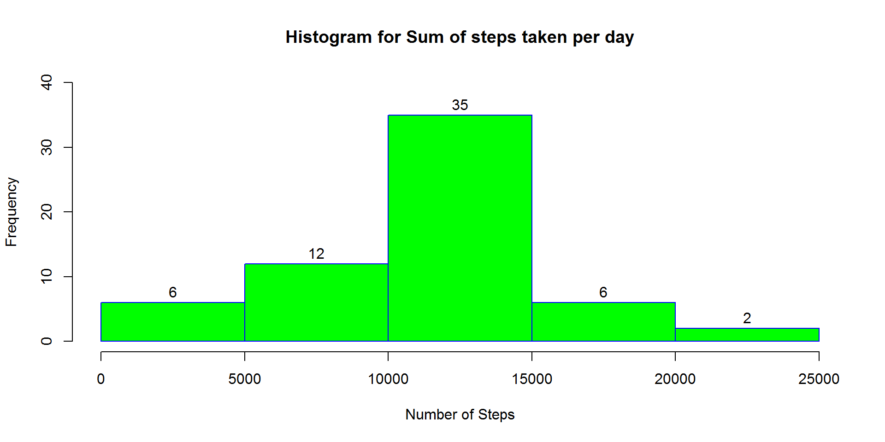
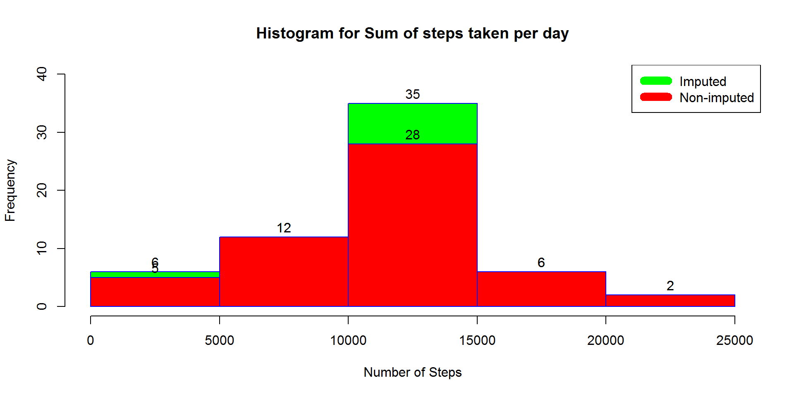
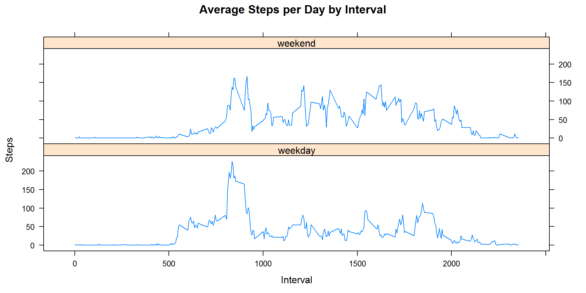

knitr::opts_chunk$set(echo = TRUE)It is now possible to collect a large amount of data about personal movement using activity monitoring devices such as a Fitbit, Nike Fuelband, or Jawbone Up. These type of devices are part of the quantified self movement a group of enthusiasts who take measurements about themselves regularly to improve their health, to find patterns in their behavior, or because they are tech geeks. But these data remain under-utilized both because the raw data are hard to obtain and there is a lack of statistical methods and software for processing and interpreting the data.
This project makes use of data from a personal activity monitoring device. This device collects data at 5 minute intervals through out the day. The data consists of two months of data from an anonymous individual collected during the months of October and November, 2012 and include the number of steps taken in 5 minute intervals each day.
The variables included in this dataset are:
steps: Number of steps taking in a 5-minute interval (missing values are coded as NA)
date: The date on which the measurement was taken in YYYY-MM-DD format
interval: Identifier for the 5-minute interval in which measurement was taken
The dataset is stored in a comma-separated-value (CSV) file and there are a total of 17,568 observations in this dataset.
Loading the required libraries for the project: dplyr and lattic
library("dplyr")## Warning: package 'dplyr' was built under R version 3.3.3##
## Attaching package: 'dplyr'## The following objects are masked from 'package:stats':
##
## filter, lag## The following objects are masked from 'package:base':
##
## intersect, setdiff, setequal, unionlibrary("lattice")Reading the CSV in data frame
actdata <- read.csv("E:\\course5\\activity\\activity.csv")sumstepsfordays <- actdata %>% group_by(date) %>% summarise(steps=sum(steps))
sumstepsfordays## # A tibble: 61 x 2
## date steps
## <fctr> <int>
## 1 2012-10-01 NA
## 2 2012-10-02 126
## 3 2012-10-03 11352
## 4 2012-10-04 12116
## 5 2012-10-05 13294
## 6 2012-10-06 15420
## 7 2012-10-07 11015
## 8 2012-10-08 NA
## 9 2012-10-09 12811
## 10 2012-10-10 9900
## # ... with 51 more rowshist(sumstepsfordays$steps,
main="Histogram for Sum of steps taken per day",
xlab="Number of Steps",
border="blue",
col="green", labels=TRUE, ylim=c(0,30))
normean<-mean(sumstepsfordays$steps,na.rm=TRUE)
normedian<-median(sumstepsfordays$steps,na.rm=TRUE)*Mean number of steps for day is 1.076618910^{4}
*Median number of steps for day is 10765
```
avgstepsforintervals <- actdata %>% filter(!is.na(actdata$steps)) %>% group_by(interval) %>% summarise(steps=mean(steps))
plot(x=avgstepsforintervals$interval,y=avgstepsforintervals$steps,type="l",ylim=c(0,200))
maxstepsininterval <- avgstepsforintervals %>% filter(steps==max(steps))
maxstepsininterval$interval## [1] 835missingrows<-sum(!complete.cases(actdata))
missingrows## [1] 2304imputeddata<-
actdata %>%
mutate(steps= ifelse(is.na(steps), avgstepsforintervals$steps[match(actdata$interval,avgstepsforintervals$interval)], steps))imputeddata[as.character(imputeddata$date) == "2012-10-01", 1] <- 0impsumstepsfordays <- imputeddata %>% group_by(date) %>% summarise(steps=sum(steps))
hist(impsumstepsfordays$steps,
main="Histogram for Sum of steps taken per day",
xlab="Number of Steps",
border="blue",
col="green", labels=TRUE, ylim=c(0,40))
impmean <- mean(impsumstepsfordays$steps)
impmedian <- median(impsumstepsfordays$steps)Mean of steps in imputed data is 1.058969410^{4}
Median of steps in imputed data is 1.076618910^{4}
hist(impsumstepsfordays$steps,
main="Histogram for Sum of steps taken per day",
xlab="Number of Steps",
border="blue",
col="green", labels=TRUE, ylim=c(0,40))
hist(sumstepsfordays$steps,
main="Histogram for Sum of steps taken per day",
xlab="Number of Steps",
border="blue",
col="red", labels=TRUE, ylim=c(0,30),add=T)
legend("topright", c("Imputed", "Non-imputed"), col=c("green", "red"), lwd=10)
mean_diff <- impmean - normean
median_diff <- impmedian - normedian*Mean difference is -176.4948964
*Median difference is 1.1886792
Weekdays <- c("Monday","Tuesday","Wednesday","Thursday","Friday")
imputeddata$dayofweek <-
as.factor(ifelse(is.element(weekdays(as.Date(imputeddata$date)),Weekdays),"weekday","weekend"))
stepsbyintervalanddayofweek<-aggregate(steps ~ interval + dayofweek, imputeddata, mean)
xyplot(stepsbyintervalanddayofweek$steps ~ stepsbyintervalanddayofweek$interval|stepsbyintervalanddayofweek$dayofweek, main="Average Steps per Day by Interval",xlab="Interval", ylab="Steps",layout=c(1,2), type="l")